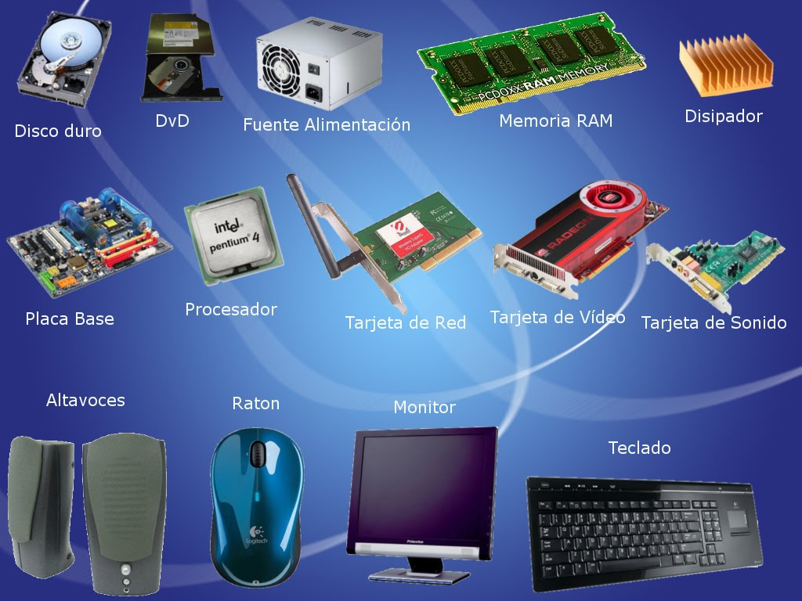

biografia
¡Hola! Soy luis fernando florez cuesta estudiante de ingenieria de sofware y datos de la UI DIGITAL, tengo 27 años, con muchas ganas de tener la experiencia en el ambito de la programacion de las TIC . Me apasiona la musica y la creatividad digital, en este sitio comparto algunos de mis trabajos y experiencias. esta es mi página personal Aquí encontrarás información sobre mí y mis proyectos.
Hardware
El hardware es la parte física de los sistemas informáticos, que incluye todos los componentes y dispositivos tangibles que permiten el funcionamiento de las computadoras y otros dispositivos electrónicos. La evolución del hardware ha sido fundamental para el desarrollo de la tecnología moderna. Desde sus inicios hasta hoy, los avances en hardware han impulsado la capacidad, el rendimiento y la accesibilidad de los sistemas informáticos.
mi blog
visita mi blogcontacto
telefono:3007596921
correo electronico:ferchonando18@gmail.com


 y ya
y ya